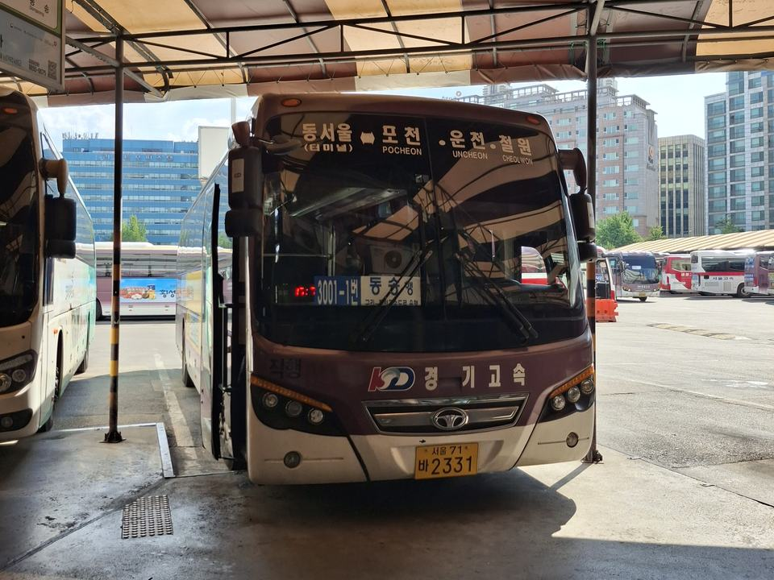

가실 방향을 누르면 지금 시각 기준으로 다음 버스와 남은 시간이 바로 나와요.
--카카오톡 안에서는 '홈 화면에 추가'가 안 돼요.
아래 버튼을 눌러 인터넷 창으로 여세요.
한 번만 해 두시면 바탕화면 아이콘으로 바로 열려요.
시외버스는 평일 기준 시간표예요.

| 시 | 출발 (분) |
|---|
(경유) 표시 차는 의정부·송우리·대진대를 거쳐 가서 더 오래 걸려요.
2026년 10월 23일에 확인한 시간이에요. 시간은 바뀔 수 있으니 명절과 공휴일에는 터미널에 꼭 확인하세요.